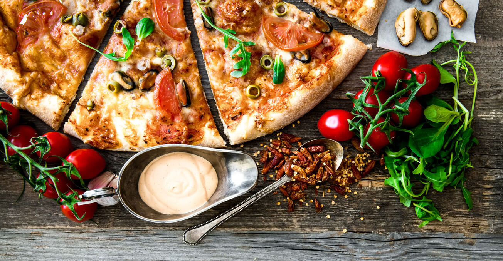
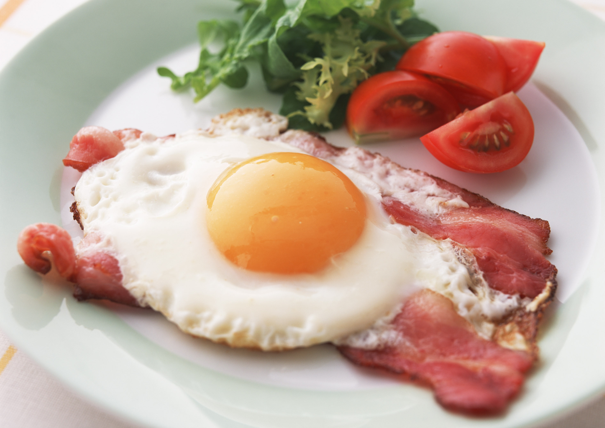
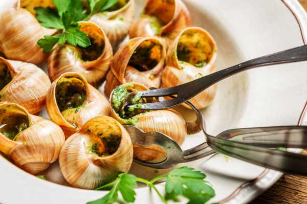
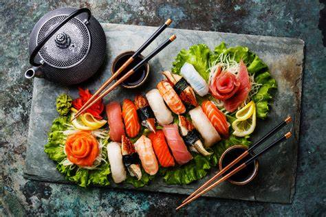
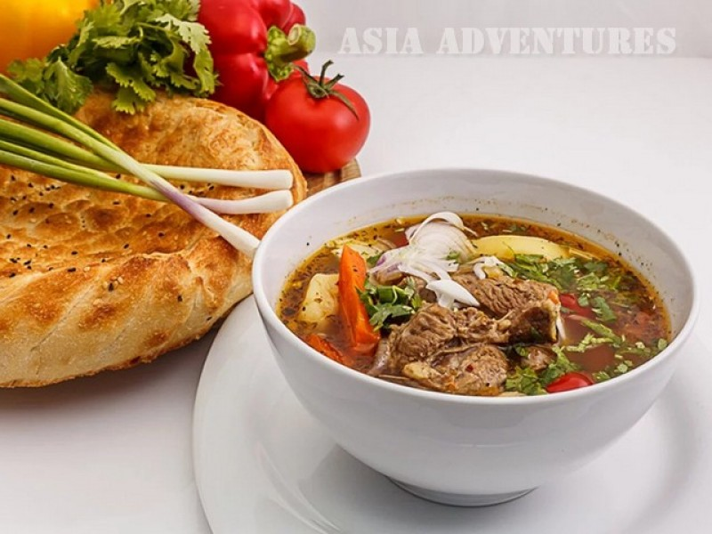
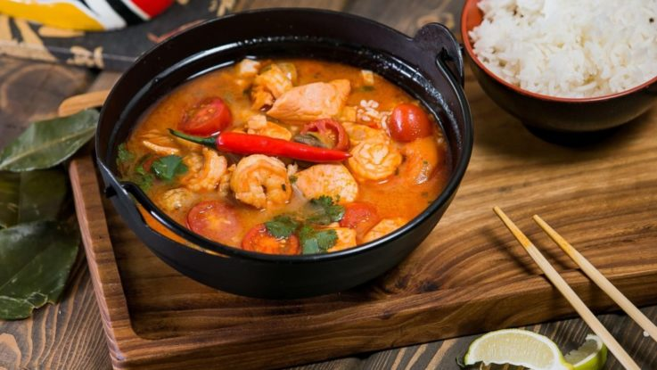

Италия:
- Пицца:Типичное итальянское блюдо.
- Лазанья:Многослойное блюдо из макарон.
- Ризотто:Классическое основное блюдо.
- Ньокки:Вкусное и оригинальное блюдо.
- Равиоли:Блюдо из макарон с начинкой.
- Прошутто:Итальянская ветчина.
- Суп Минестроне (Minestrone).
- Цыпленок«Пармезан».
- Джелато:Итальянское мороженое.
- Сыр Пармезан
Англия:
- Ростбиф: Запечённый большой кусок говядины.
- Яйца по-шотландски: Варёные яйца внутри мясного фарша, обжаренные в панировочных сухарях.
- Картофельная запеканка с фаршем (Cottage pie).
- Сырные крэкеты.
- Яблочные пироги.
- Йоркширский пудинг: Печеное в духовке несладкое тесто из муки, яиц и молока.
- Баноффи-пай: Десерт, состоящий из бананов на подушке из вареной сгущенки.
Франция:
- Филе: Блюдо, которое давно завоевало любовь.
- Мясо по-французски: Очень популярное блюдо стола.
- Французские пончики: Они получаются очень воздушными и нежными.
- Картофель "Гратен Дофинуа": Картофельная запеканка по-французски.
- Жюльен из крабовых палочек и яиц: Ароматное, довольно сытное блюдо.
- Рататуй: Овощное рагу на оливковом масле с пряными травами и чесноком.
Испания:

- Испанский омлет, или картофельная тортилья: Это блюдо состоит из картофеля, лука и нескольких яиц1.
- Гаспачо: Это холодный томатный суп, который обычно подают с тостами и красным перцем1.
- Паэлья: Это знаменитое блюдо из Валенсии, которое готовят на сковороде.
- Чурросы: Это что-то вроде пончиков-печенья, которые подают с горячим шоколадом1.
- Чорисо: Это пикантная колбаса1.
- Хамон: Это национальный деликатесный окорок1
Китай:

Япония:
Казахстан:
Тайланд:
- Утка по-пекински (Beijing Kaoya)
- Дим-сам (Dim Sum)
- Китайский гамбургер (Rou Jia Mo)
- Жареный рис (Chao Fan)
- Пельмени (Jiaozi)
- Вонтоны (Wonton)
- Ма по тофу (Ma Po Tofu)
- Свинина в кисло-сладком соусе
- Курица гунбао
- Чоу мейн - жареная лапша
- Тамагояки: Традиционный японский омлет,
который готовят особым способом. - Воздушные японские панкейки.
- Лапша удон с курицей в соусе терияки:.
- Курица под соусом терияки:Простой
рецепт приготовления вкусной куриной грудки. - Мисо: От редакции.
- Рамен, с курицей.
- Десерт "Моти".
- Бесбармак (Бешбармак).
- Казы.
- Сырне.
- Кеспе.
- Иримшик.
- Самса.
- Пуктермет.
- Каусырма.
- Шельпек.
- Салат «Шакарап»
- Пад тай.
- Том Ям Гунг (пряный и кислый суп с
креветками). - Том Ка Гай (тайский суп с кокосом,
галангалом и курицей). - Гаенг Кео Ван Гай (тайский зеленый
куриный карри). - Сом Там (тайский салат из зеленой папайи).
- Пад Кра Пао (жареный тайский базилик).
- Као Пад (жареный рис в тайском стиле).
- Кунг Сом Пак Руам (Gang Som Pak Ruam).